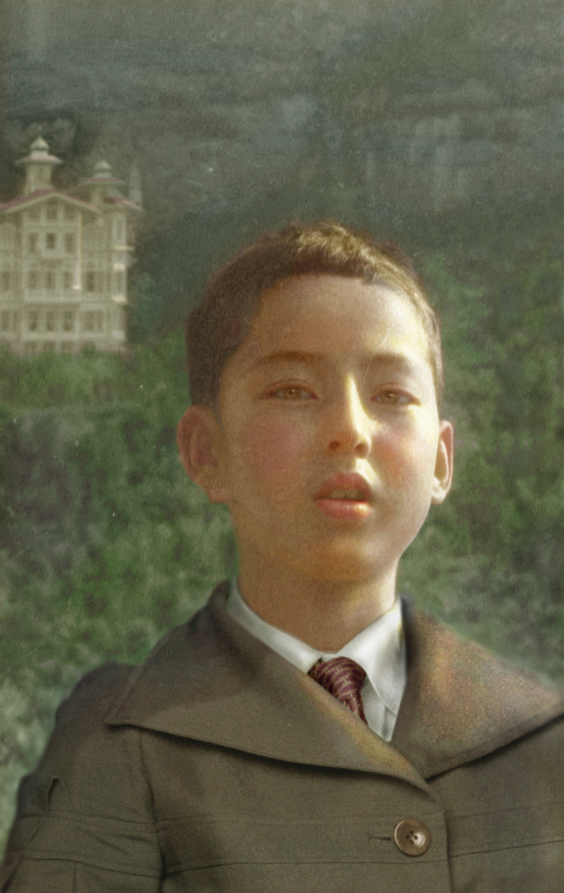

Early Life
-
1970s - 1980s
Childhood and Secondary School (China)
Mei Shi's parents are intellectuals in the scientific research area, and his father likes painting and calligraphy. His neighbors, uncles and aunts, all majored in science and engineering, and they had completely different views on Mei Shi's persistent preference for painting and literature since childhood. Therefore, when Mei Shi was growing up, he often kept his painting in a sneaky state.
Eventually going into secondary school, his passion for art became irreversible and his parents began to strongly support this path.
Throughout his childhood and lasting into life beyond, Mei Shi has found a consistent source of inspiration in the works of Eugene Delacroix and Vincent Van Gogh.
 -
Late 1980s
Bachelor's Degree: Central Academy of Fine Arts (Beijing, China)
Throughout his undergraduate arts experience, Mei Shi developed technical proficiency through realistic works, working long hours alongside his studies.


-
Pivotal Moments
-
June 4, 1989
Participation in the 1989 Democracy Movement (Beijing, China)
During the June Fourth Incident, Students from the Central Academy of Fine Arts participated in the 1989 Democracy Movement and hoped to reach democracy and freedom in China through hunger strikes, speeches, and paintings.
Mei Shi was injured during the June Fourth Incident and later censored and detained, during which time he became seriously ill and was moved to residential surveillance. Residential surveillance was lifted after the 1990 Asian Games.

-
1993
Won first and second place for "China's First Computer Art Exhibition"

For Mei Shi, claiming the top recognition of this prestigious exhibition sparked a serious interest in pursuing digital art and design.
Equipped with a strong foundation from his undergraduate experiences and hoping to pilot a new life for himself, he started the prominent Chinese brand design company "Mainmast Brand Design."
International Brand Design Impact
Mei Shi has designed visual identity systems for many famous institutions and fortune 500 companies including International Union of Geological Sciences, Korea Saiwo, China Credit Insurance, Beijing Benz, China Life Insurance, Sany Heavy Equipment, China Export-Import Bank, China Salvage, Hong Kong Xinzhong, PetroChina Dagang, Mengniu, Anta, CITIC, World Bank Poverty Alleviation, AVIC Precision Machinery, Chinese Academy of Geological Sciences, etc.
Mei Shi executes unified, standard, and international systems of design strategies to communicate a highly capable and profound brand image to the public. "
See Complete Design PortfolioCore Values
Through pivotal moments during his college experience, both personally and politically, Mei Shi developed a sense of deep gratitude for the people and opportunities around him. Despite working through challenging and unstable times during the Cultural Revolution and navigating the complex and at times unforgiving world of business and design, Mei Shi maintained an optimistic and open outlook on life and art.
After his rigorous undergraduate training in realism and the forms of the human body, Mei Shi was drawn to the wonder and openness of natural landscapes, incorporating mountain vistas, green hills, and the freedom of the outdoors into many of his works.
Combining the human aspects of gratitude with the awe-inducing nature of natural landscapes, Mei Shi has explored subjects across many art styles: shifting between realistic portraits, landscape studies, interactive experimental works, and abstract pieces.
However, the one thing that remains constant across his range of artistic endeavors is the continuous path of striving towards free flowing expressions of beauty in all forms.
"He likes to travel, and he likes to be free and unfettered, even if he just takes a deep breath in front of the sea and listens to the waves; he likes to drive fast, but he doesn't speed. He loves speed without obstacles. There is a natural joyous mentality in his stock. And the heart. Ding also has a world of bliss that belongs to him." - So Hu 2018
"Max 's paintings give giving surging, Choi Ha Wan atmospheric feel. Now the lotus leaf roll, mountain show; suddenly night rain, off the ice dream. Max believes that the pursuit of "charm" is an ideal state of art. Style charm , but also refers to poetry and painting style charm, its aesthetic is characterized by vivid natural, born into without artificial artificial traces, reflecting the mood of clearing away empty talk. Max shi is practicing his artistic pursuits." ——Zhangjun(Associate Dean, Mei Shi, professor of Communication University of China